Remotely Detectable Keyed Communication through Motion
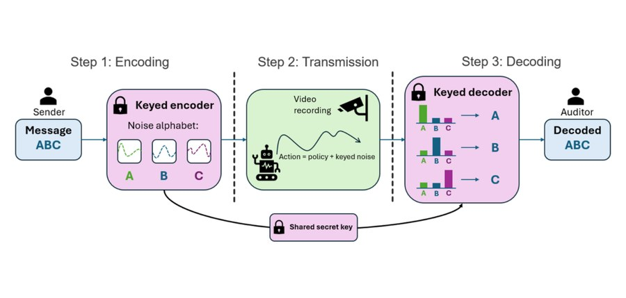
Researcher, Google DeepMind
I'm a researcher at Google DeepMind, where I work on provenance. Previously, I was a postdoc at the University of Cambridge, working with the Prorok Lab and affiliated with Trinity College.
My research has centered on trust, safety, and coordination for AI deployed in the physical world, including remotely verifying which policy a robot is running and designing scalable multi-agent algorithms with formal guarantees. My PhD explored multi-agent systems on graphs.
Grouped by topic, newest first. * denotes equal contribution. Also on Google Scholar.
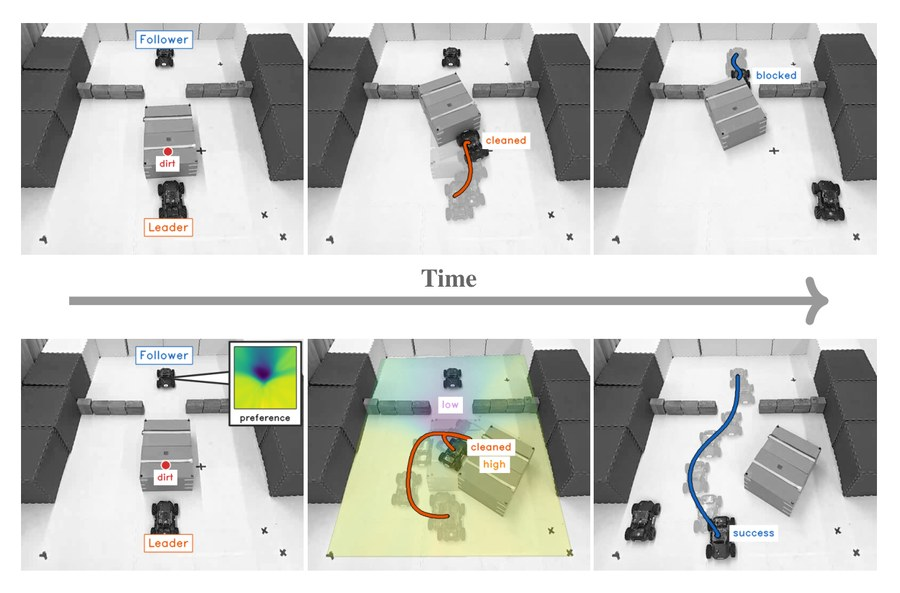
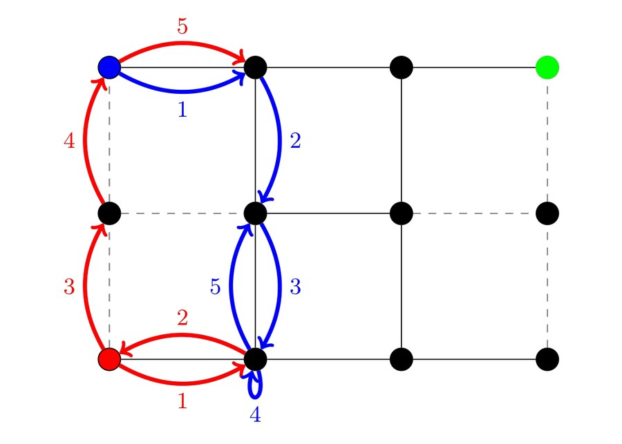
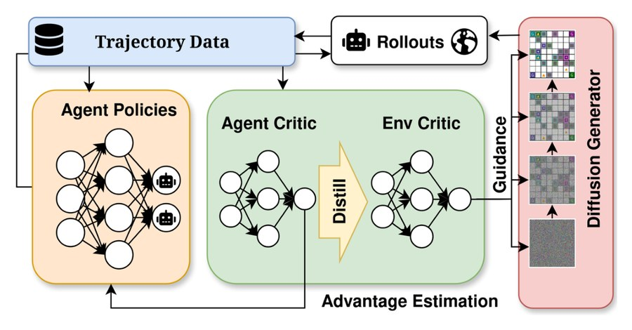
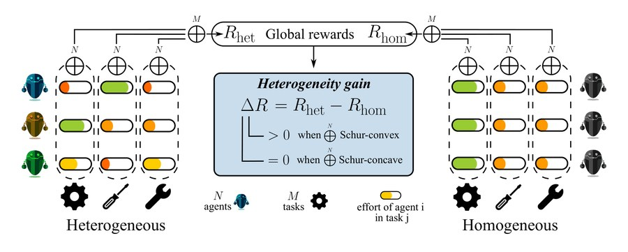
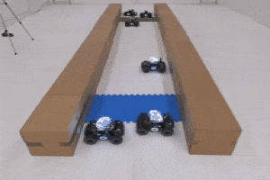
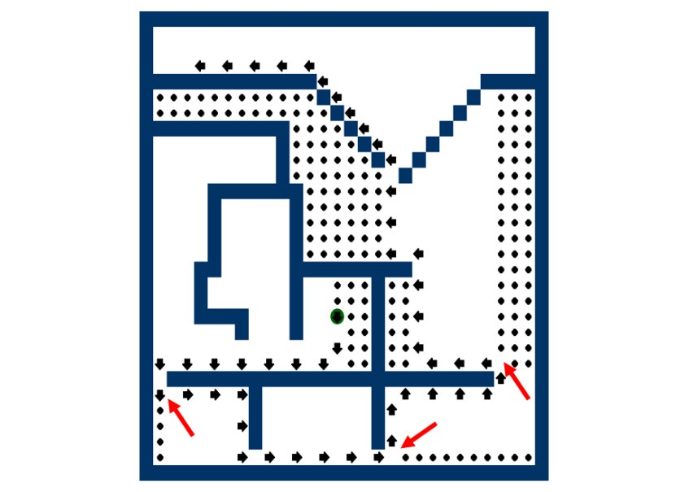
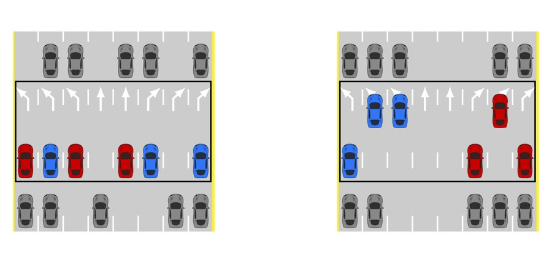
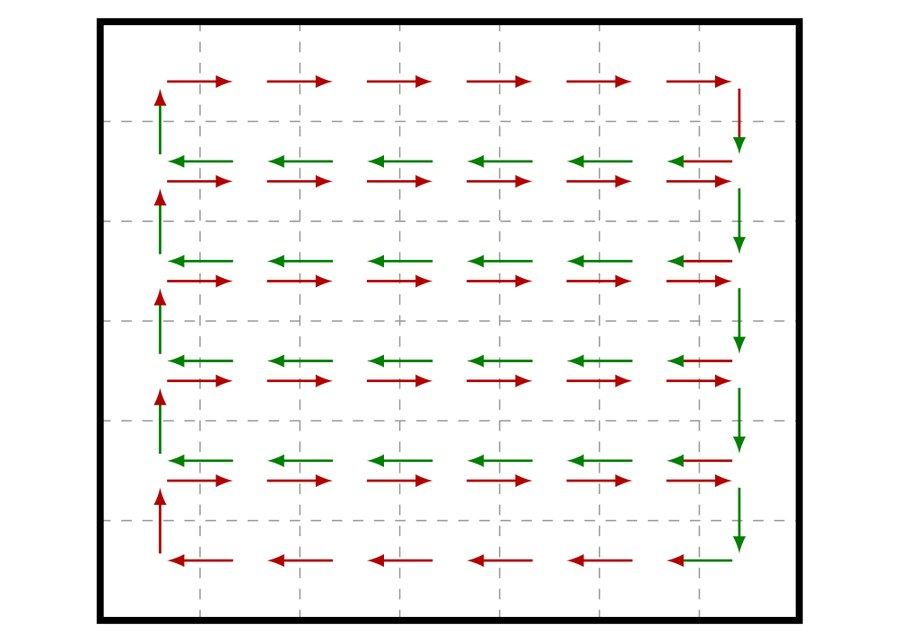
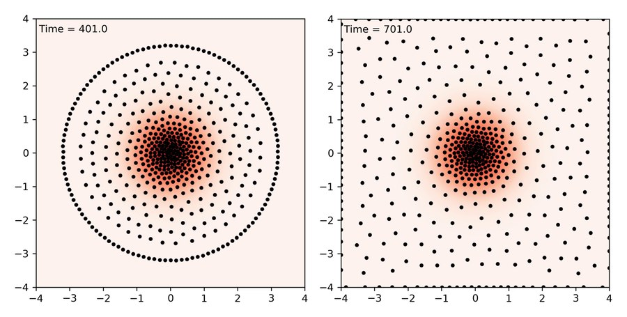
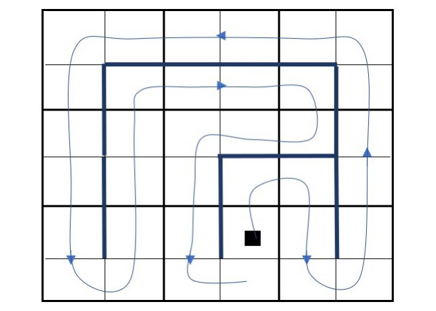
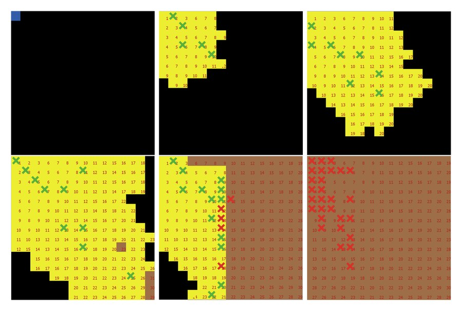
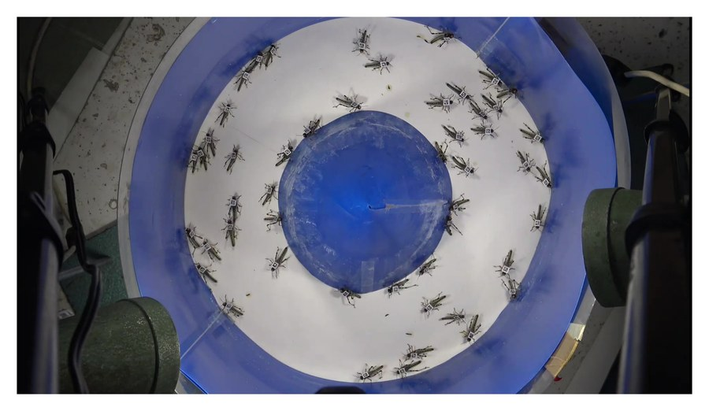
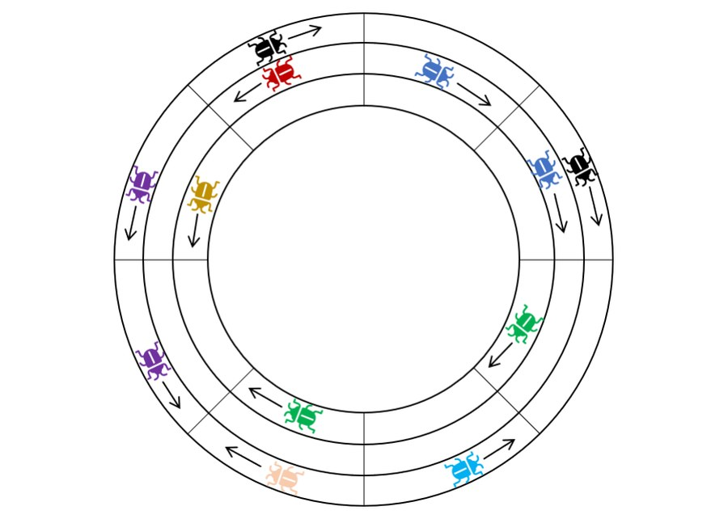
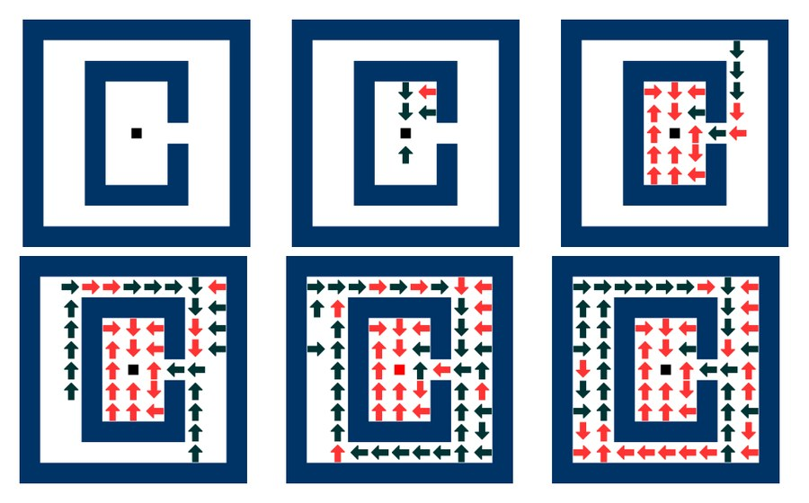
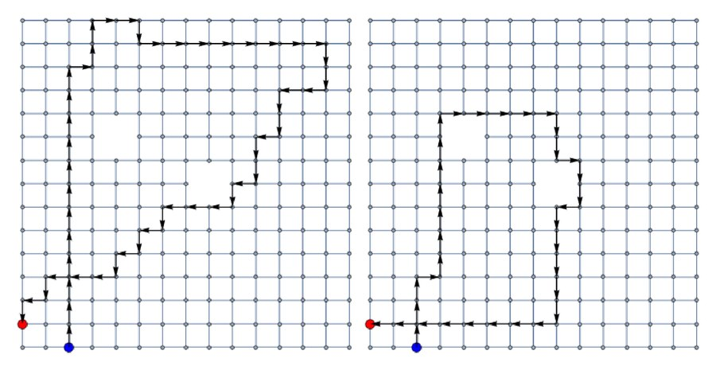
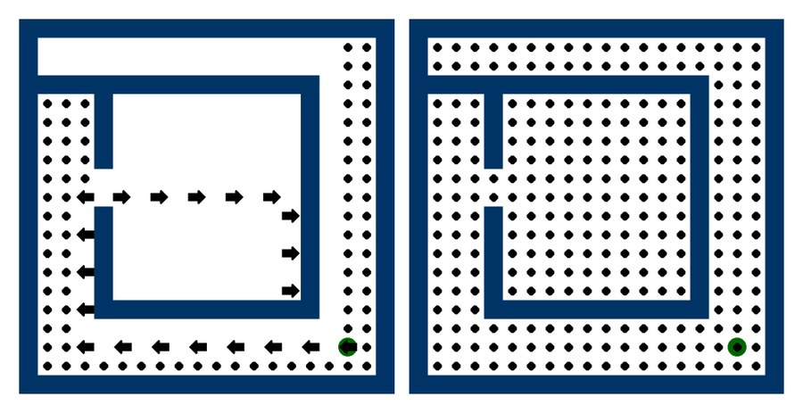